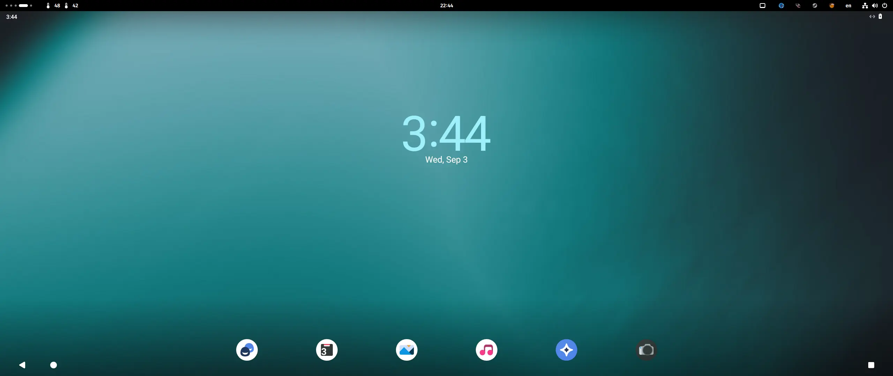
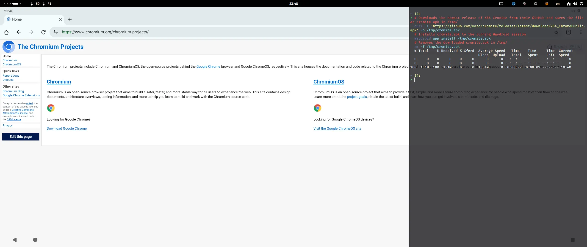
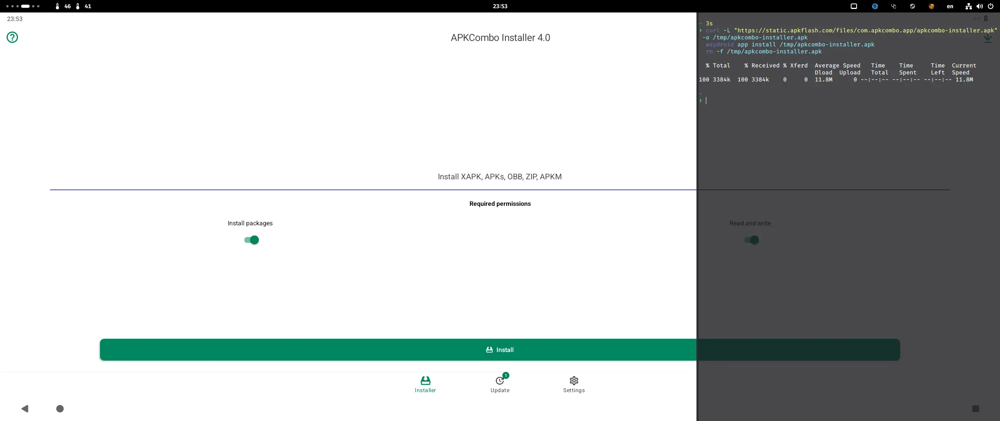

a nerd's half-hearted guide to waydroid
I use Waydroid to run Android app for testing and entertainment purposes.
My devices are either AMD or Intel, and I run a custom atomic Fedora image. Steps and results may not be 100% replicable on different devices or Linux variants.
Note
Waydroid cannot run with hardware acceleration on NVIDIA GPUs and require software rendering to run.
Installing Waydroid
If you run Fedora Workstation, run sudo dnf install waydroid and complete the installation. If you run any of the atomic Fefora images, run rpm-ostree install waydroid and reboot once the deployment is completed.
I also have android-tools installed for ADB and python3-pyclip to sync host-Waydroid clipboard. You can add these packages to your dnf install or rpm-ostree install commands.
For other distros, refer to complete installation instructions in Waydroid's official documentation.
Initializing Waydroid
Waydroid has a GUI initialization utility. However, the GUI does not seem to work reliably on atomic Fedora images, so I prefer to use the command line interface. I won't be covering GUI here.
Now, I will separate this section into two parts: VANILLA and GAPPS. Let's start with VANILLA.
VANILLA variant
I prefer to initialize Waydroid using the VANILLA variant which comes without Google apps. I also don't typically use Google or other services inside Waydroid or other emulator-like translation layers in the first place. This is not to say you can't install GAPPS on top of VANILLA! We will address this later.
My initialization commands are as follows.
# Enable waydroid-container systemd service required for Waydroid to run
sudo systemctl enable --now waydroid-container.service
# Initializes Waydroid with the VANILLA variant
sudo waydroid init -c 'https://ota.waydro.id/system' -v 'https://ota.waydro.id/vendor'
# Restores security context if SELinux is in use to prevent launch failures
sudo restorecon -R /var/lib/waydroid
Once done, I run
waydroid show-full-ui
to start Waydroid... or rather, I launch a permanent .desktop entry that wraps the command, straight from my app drawer.
[Desktop Entry]
Type=Application
Name=Waydroid
Exec=waydroid show-full-ui
Categories=X-WayDroid-App;Utility;
X-Purism-FormFactor=Workstation;Mobile;
Icon=waydroid
NoDisplay=false

Success.
As you can see, Waydroid time is not in sync with my system time - it defaults to UTC. I always immediately change it to my system time+24H format, disable on-screen keyboard, and disable dark mode.
GAPPS variant
If you prefer to install the slightly larger GAPPS variant to have Google apps from the very first launch, run the following commands instead.
# Enable waydroid-container systemd service required for Waydroid to run
sudo systemctl enable --now waydroid-container.service
# Initializes Waydroid with the VANILLA variant
sudo waydroid init -s GAPPS -c 'https://ota.waydro.id/system' -v 'https://ota.waydro.id/vendor'
# Restores security context if SELinux is in use to prevent launch failures
sudo restorecon -R /var/lib/waydroid
Once done, start Waydroid.
waydroid show-full-ui
If you have speakers or audio devices turned on, just be aware that doing this might terrorize you with the Device not Play Protected notifications right after you start Waydroid. This will continue until you enable Do Not Disturb mode on Waydroid, mute Waydroid sounds, mute or turn off your audio devices, or straight-up close Waydroid.
This will also be addressed soon.
For the time being, success.
Notice that this time, Waydroid picks up my system time because Google services is present.
Using waydroid_script to install essentials
waydroid_script is a git repo that contains installation scripts for additional Waydroid functionalities. For complete information, refer to casualsnek/waydroid_script.
Note
This script typically needs to be ran with Waydroid session stopped by running waydroid session stop unless stated otherwise.
You can follow the instructions on the repo, or follow my preferred method.
Note
My provided commands assume you are using a POSIX-compliant shell like bash or zsh. If you are, like me, using fish, you can use activate.fish instead of .../activate, create a bash script file, or start a bash session instead. I personally collect my scripts within a .justfile and specify bash.
# Clones the waydroid_script git repo as waydroid_script in /tmp
git clone https://github.com/casualsnek/waydroid_script.git --depth 1 /tmp/waydroid_script
# Initializes the Python venv to
python3 -m venv /tmp/waydroid_script/venv
# Activates the Python venv
source /tmp/waydroid_script/venv/bin/activate
# Installs the required Python packages for the installer to run
sudo /tmp/waydroid_script/venv/bin/pip install -r /tmp/waydroid_script/requirements.txt
# Launches the installer
sudo /tmp/waydroid_script/venv/bin/python3 /tmp/waydroid_script/main.py
# Deactivates the Python venv
deactivate
# Removes the waydroid_script folder in /tmp. This will only remove the installer; not remove the items you chose to install
sudo rm -rf /tmp/waydroid_script ~/.cache/waydroid_script
When prompted for version, select Android 13.
I won't get too much into the details about each options and what they are, but you will most definitely need libhoudini or libndk to run most Android apps. You will also want to certify for Google Play Protect.
libhoudini and/or libndk
libhoudini (Intel CPU) or libndk (AMD CPU) are translation layers for ARM to X86_64 CPUs. You typically only need one of them, matching your CPU, but some apps may require you to have both. I have not personally encountered apps that require both. My recommendation is to install either one of them first and see if your apps run.
It is also entirely possible that apps don't run with either of them or both of them. Such is life.
Note
This step must be ran with no Waydroid session currently running. Stop any running session with waydroid session stop.
gapps (optional for VANILLA variant)
If you installed the VANILLA variant, you might want to eventually install Google apps and/or services on your Waydroid installation. If you installed the GAPPS variant, you don't need to install it again.
Note
This step must be ran with no Waydroid session currently running. Stop any running session with waydroid session stop.
Certify for Google Play Protect
If you installed the GAPPS variant, or decide to install gapps using waydroid_script on a VANILLA variant, you will want to complete the certification. This essentially marks your Android installation as "secure" and gets rid of the pesky unprotected notification. Just complete the selection, and the script will provide you with an string of numbers and instructions to navigate to Google's Device registration page. Enter the string of numbers and wait for 3-10 minutes, then restart Waydroid.
Note
This step must be ran with a running Waydroid session.
Installing apps
At this point, you can start installing your apps and start using them. If you prefer getting them directly from the Play Store, or if they are available within F-Droid, you can be on your way and start doing your thing. But if you're like me, and prefer to not use the Play Store, you will need to obtain APK or XAPK files first and then install them.
Installing apps using APK files
Installing APK files is relatively simple. You can download and save the APK file to your host system and install it using the command line interface, also on your host system. Here's an example.
# Downloads the newest release of X64 Cromite from their GitHub and saves the file as cromite.apk in /tmp/
curl -L 'https://github.com/uazo/cromite/releases/latest/download/x64_ChromePublic.apk' -o /tmp/cromite.apk
# Installs cromite.apk to the running Waydroid session
waydroid app install /tmp/cromite.apk
# Removes the downloaded cromite.apk in /tmp/
rm -f /tmp/cromite.apk

Success. We now have Cromite in Waydroid!
Of course, you can just download files using your host browser the traditional way and then run the waydroid app install /path/to/file.apk command. Whatever works.
Note
Apps that require Accessibility permissions may not fully work when installed in this manner. To circumvent this, follow the XAPK installation method instead.
Installing apps using XAPK files
XAPK files cannot be installed using the waydroid app install command. I've been using the APKCombo Installer app to install my XAPKs. Copy and paste the following commands for your convenience.
curl -L "https://static.apkflash.com/files/com.apkcombo.app/apkcombo-installer.apk" -o /tmp/apkcombo-installer.apk
waydroid app install /tmp/apkcombo-installer.apk
rm -f /tmp/apkcombo-installer.apk

APKCombo Installer will be available in your Waydroid app drawer. Once you give it the required permissions, you can start using it to install XAPK files or APK files that require Accessibility permissions.
Transferring files between host & Waydroid
You most likely are wondering at some point - how do I transfer files from $HOME, then? Waydroid isn't visible in my file explorer, and digging within /var/lib/waydroid also doesn't result in anything relevant, so how exactly...?
I'll cover some of them here.
KDE Connect
No words needed, honestly. Just install KDE Connect and pair it with your host's KDE Connect, or if you're on GNOME, GSConnect. You can then use it to transfer and receive files.
I have, however, noticed the pairing breaks every now and then - which is a bummer. But otherwise, KDE Connect is excellent for light file sharing.
ADB
If you are familiar with adb, you most likely are familiar with the push and pull command.
If you are not, let me enlighten you. adb push is a command that lets you transfer files into Android - or Waydroid in this case. adb pull is the opposite - it transfers files from Android. Here are short examples.
adb push /path/to/directory/or/file/on/host /storage/emulated/0/Download
takes a directory or file from your host PC and places it into Waydroid's default Download folder - the same one you see when you open Files.
adb pull /storage/emulated/0/Android/data/com.developer.appname ~/Documents/com.developer.appname
takes the com.developer.appname/ directory from Waydroid, or the app folder for appname that you see inside Android > data, and saves it to a folder called com.developer.appname in your PC's Documents folder. Simple enough?
Admittedly, this method is a bit tedious, especially if you're trying to pull or push multiple files. However, I think this is a decent solution. On the plus side, it often bypasses the need of using rootful file explorers if you simply need to copy small files from Android/data/com.package.appname. Some apps even allow you to push into them.
Shared storage directory
The Waydroid documentation has a page with instructions for setting up a shared storage directory.
This is technically the most convenient method, as you are basically linking a folder between your host and Waydroid. It is also probably the most ideal and stress-free, as you do not have to jump through hoops to set everything up. However, I do not personally like this method, as it can be janky and, in my experience, can mess with mounting and your Waydroid install in general.
The documented instructions are admittedly minimal. Here's an extended version.
- Create the target shared storage directory on your host PC - for example,
~/hostcopy. - Populate
~/hostcopywith your desired files. I recommend to have copies of the files you place here outside of~/hostcopy. - Create the target shared storage directory on Waydroid's Internal shared storage - for example,
droidcopy. - Run the command as documented, with the names adjusted.
sudo mount --bind ~/hostcopy ~/.local/share/waydroid/data/media/0/droidcopy - Run the
lscommand to verify. You can also open the Files app on Waydroid and check ifdroidcopy/contains your files.sudo ls ~/.local/share/waydroid/data/media/0/droidcopy
Spoofing device model
Work in progress
Enabling software rendering for NVIDIA
Work in progress